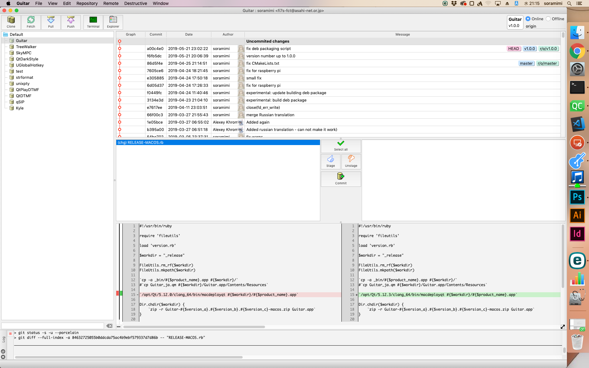
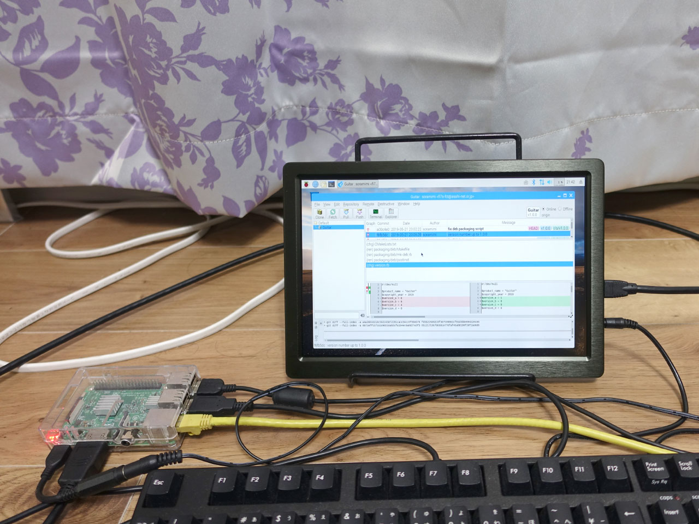
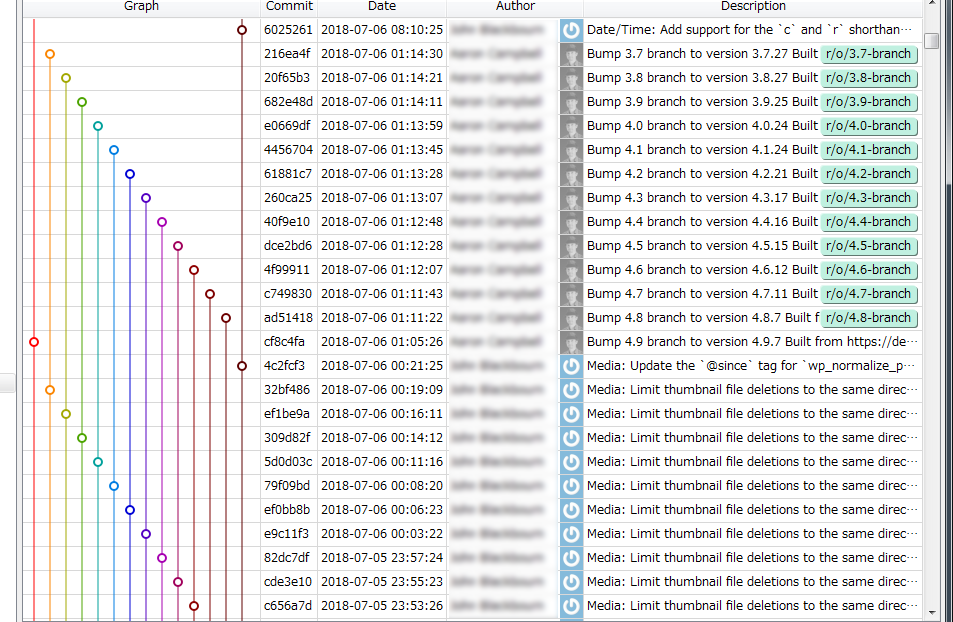

注：このページの記述内容は若干古いです。最新情報は、GitHubのリポジトリページをご覧ください。
Windows、macOS、Linuxで動作する、バージョン管理ツール Git のクライアントアプリケーションです。
https://github.com/soramimi/Guitar
https://qiita.com/soramimi_jp/items/8425196ddc28bf283333
https://qiita.com/soramimi_jp/items/2bca23c52ae677ad7b3d
多くのGitクライアントアプリは何かしら問題を抱えています。起動時間が遅すぎるとか、よく落ちるとか、ダウンロードの際のユーザー登録が面倒だとか、商用利用するには有料だとか、マルチプラットフォーム対応してないとか、アニメーションや視覚効果のような演出が過剰でウザいとか、ソースコードが公開されていない、といったものです。そのような不都合をできる限り排除するようにしました。 最初はGitの使い方を私自身が習得するためと、内部の仕組みに興味があったので、自分の勉強のために開発に着手しました。
今時の優秀なエンジニアの方は、GUIでGitなんて、、、と思う方もいらっしゃるかもしれません。それはそれで大いに結構なことです。私自身も、めったに使わないコマンドを実行したいときは、無理してGUIに頼らず、ターミナルを開いてgitコマンドを手入力することもあります。これは便利だと思う機能を見つけたら、このアプリに組み込んだりします。日常で頻繁に使うGit操作を快適に行いたいとか、コミットグラフを綺麗に見たいとか、そのような用途だけでもお使いいただけます。使いたがらない人にGUIを強要する考えはないので、ブランチの流れをビジュアルに見たいだけの理由でこのアプリを使っていただくのでも嬉しいです。なので、高機能なクライアントアプリとしてではなく、GUI支援アプリと思っていただいても結構です。
特徴
- 私用・商用を問わず無料
- メールアドレスや個人情報を登録することはありません。
- 某アプリほど、起動に時間がかかりません。
- 某アプリほど、アイコンが気持ち悪く（可愛く？）ありません。
- macOS Mojave のダークモードに対応しているほか、各プラットフォームでのダーク描画を実装しています。
- GPG署名に（だいたい）対応しています。
- オープンソース、フリーソフト。（GPLv2）
- C++で開発。GUIフレームワークはQt 5を採用。
スクリーンショット
 |
 |  |
| ▲Windows | ▲macOS | ▲Ubuntu |
|  |  |
 |
| ▲Raspbian | ▲ダーク描画 | ▲コミットグラフとログ |
 |
||
| ▲Diffビュー |
{kind=link}
{kind=link}
{kind=link}
ダウンロード
最新版のダウンロードは次のリンクからお願いします。
https://files.soramimi.jp/guitar/
ビルド方法
開発
最初の起動
Guitarを起動すると、初回だけgitコマンドとfileコマンド（Windowsの場合は、git.exeとfile.exe）の場所を尋ねられます。PATHが通っている場合は、候補が表示されますので、適切なものを選択してOKを押してください。候補が無い場合はインストールする必要があります。
Windows
- msvcp120.dll
- msvcr120.dll
Guitar.exe を起動したとき、「msvcp120.dll , msvcr120.dll が見つからない」等のエラーが表示された場合、 Visual Studio 2013 の Visual C++ 再頒布可能パッケージ の32ビット版（vcredist_x86.exe）をインストールする必要があります。
- git.exe
Git for Windows をインストールします。
- file.exe
Guitar\misc\win32tools.zip の中に入っていますので、展開してそれを選択します。
macOS / Linux
macOSやLinuxのディストリビューションによっては既にインストール済みかもしれません。無い場合はOSごとの方法で git をインストールします。Ubuntuの場合、下記のコマンドを実行します。
$ sudo apt-get install git
既知の問題
- ファイルリストでバイナリファイルを選択したとき、対応済みの一部の画像ファイルを除き、diffビューが乱れた表示になることがあります。
- gitのサブモジュール機能については一切考慮していません。将来バージョンの課題となっています。
- 検索機能はありません。いつかそのうち付けます